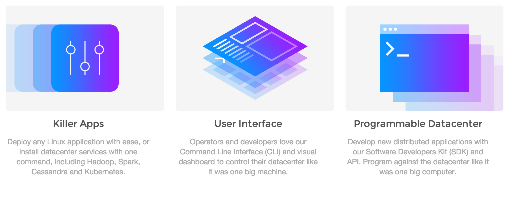

Mesosphere and the DCOS
Elizabeth Lingg
elizabeth@mesosphere.com
We are Mesosphere
An introduction to the world of Mesosphere
Deploying applications with Marathon
Mesosphere Data Center Operating System (DCOS)
Status quo is static partitioning
and use of virtual machines

Add some virtual machines

Provision Hadoop

Provision a web service

Moar data, moar Hadoop
Mesos let us treat a cluster of nodes...

As one big computer

|
Not as individual machines |
Not as VMs |
But as computational resources like cores, memory, disks, etc.
Mesos is...
Open Source Apache project |
|
Cluster Resource Manager |
|
Scalable to 10,000s of nodes |
|
Fault-tolerant, battle-tested |
|
An SDK for distributed apps |

The Mesos ecosystem is
growing

High Level View of Mesos
Framework = scheduler + executor
Schedulers get resource offers
Executors run tasks

We love containers

Most modern applications are a web of containers


Now what?
An introduction to the world of Mesosphere
Deploying applications with Marathon
Mesosphere Data Center Operating System (DCOS)
Say hi to Marathon
a self-serve interface to your cluster

distributed "init" for long-running services

a private fault-tolerant PaaS

a container orchestration platform

Marathon does it!
- Start, stop, scale, update apps
- Nice web interface, API
- Highly available, no SPoF
- Native Docker support (as of Mesos 0.20.0)
- Pluggable event bus
- Rolling deploy / restart
- Application health checks
- Artifact staging
Service Discovery
Set environment variables
Read config from device (rsync'ed to fs)
Read from K-V store
Use DNS
HAProxy works pretty well
Marathon REST
POST /v2/apps
GET /v2/apps
PUT /v2/apps/{appId}
GET /v2/apps/{appId}/tasks
DELETE /v2/apps/{appId}/tasks/{taskId}
...
Run a Docker container on Marathon
http -v POST http://10.94.29.195:8080/v2/apps @app-ruby.json
{
"container": {
"type": "DOCKER",
"docker": {
"image": "superguenter/demo-app"
}
},
"cmd": "rails server -p $PORT",
"id": "rails-demo",
"instances": 1,
"cpus": 0.01,
"mem": 256,
"ports": [3000]
}
An introduction to the world of Mesosphere
Deploying applications with Marathon
Mesosphere Data Center Operating System (DCOS)
Mesos for all the containers

Mesos for all the things


DCOS Features
